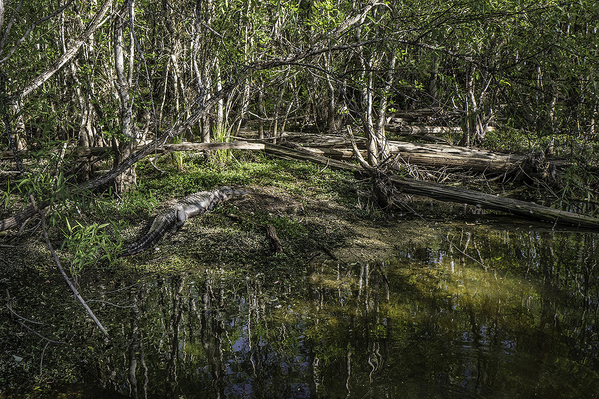

The VR Experience
SwampScapes, is a sensory immersion into one of Florida's most endangered ecosystems, the Everglades. The project transports users to seven endangered landscapes - from the treetops of urban swamps to the remote sloughs of the Fakahatchee swamp. As cities grow, wetlands and swamps around the world are sacrificed to pave the way for housing, agriculture and industry without much regard for what is lost. One of the biggest threats to swamps is a lack of understanding of the role they play in capturing carbon, fostering biodiversity, and buffering us from storms and rising seas.
The VR experience is available and free for educators. Please contact us for access.